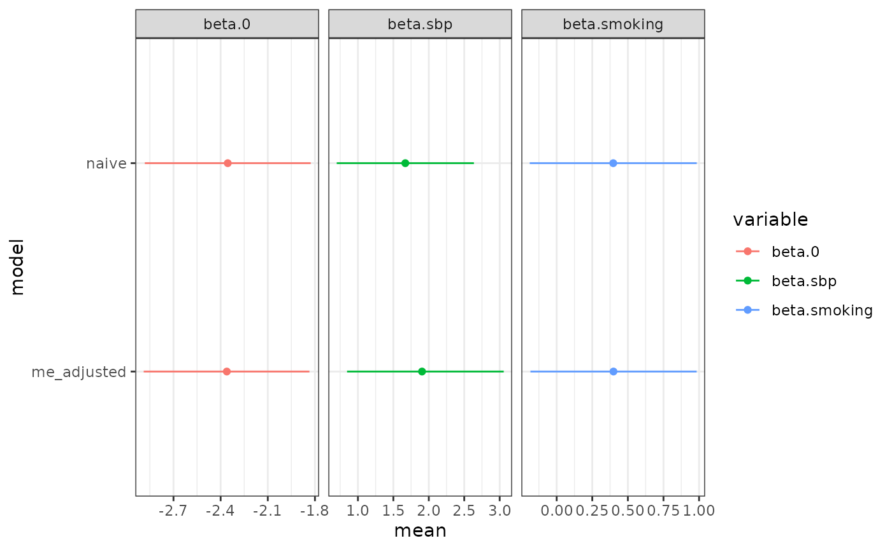

Influence of systolic blood pressure on coronary heart disease
Framingham_heart_study.Rmd| Error types | Likelihood | Response | Covariate with error | Other covariate(s) |
|---|---|---|---|---|
| Classical | Binomial | disease |
sbp1, sbp2
|
smoking |
The data and model in this example was also used in Muff et al (2015), so more
information on the measurement error model can be found there. The model
is identical, this example just shows how it can be implemented in
inlami.
In this example, we fit a logistic regression model for whether or
not a patient has heart disease, using systolic blood pressure (SBP) and
smoking status as covariates. SBP is measured with error, but we have
repeated measurements, and so we would like to feed both measurements of
SBP into the model. This can be done easily in the inlami
package. The data used in this example is also included in the package,
simply type ?framingham for more details.
The formula for the main model of interest will be \[ \text{logit}\{\texttt{disease}_i\} = \beta_0 + \beta_{\texttt{sbp}} \texttt{sbp}_i + \beta_{\texttt{smoking}} \texttt{smoking}_i, \] and the formula for the imputation model will be
\[ \texttt{sbp}_i = \alpha_0 + \alpha_{\texttt{smoking}} \texttt{smoking}_i + \varepsilon_i^{\texttt{sbp}}. \] In addition, we of course also have the classical measurement error model that describes the actual error in the SBP measurements, and since we have repeated measurements we actually have two: \[ \begin{align} \texttt{sbp}^1_i = \texttt{sbp}_i + u_i^{1}, \\ \texttt{sbp}^2_i = \texttt{sbp}_i + u_i^{2}, \end{align} \] where \(u_i^{1}, u_i^{2} \sim N(0, \tau_u)\) are the measurement error terms.
TODO: Let user specify these priors.
prior.beta <- c(0, 0.01)We can then call the fit_inlami function directly with
the above formulas for the model of interest and imputation model. Also
note the repeated measurements argument, which must be set to
TRUE to ensure that the model is specified correctly. We
give the precision for the error term of the measurement error model a
prior, and the error term for the imputation model a prior. By default
in R-INLA, the fixed effects are given Gaussian priors with mean \(0\) and precision \(0.001\). We re-assign the precisions to be
\(0.01\), but keep the means at 0
(therefore they are not specified in the control.fixed
argument).
framingham_model <- fit_inlami(formula_moi = disease ~ sbp + smoking,
formula_imp = sbp ~ smoking,
family_moi = "binomial",
data = framingham,
error_type = "classical",
repeated_observations = TRUE,
prior.prec.classical = c(100, 1),
prior.prec.imp = c(10, 1),
prior.beta.error = c(0, 0.01),
initial.prec.classical = 100,
initial.prec.imp = 10,
control.fixed = list(
prec = list(beta.0 = 0.01,
beta.smoking = 0.01,
alpha.0 = 0.01,
alpha.smoking = 0.01)))Once the model is fit we can look at the summary.
summary(framingham_model)
#> Formula for model of interest:
#> disease ~ sbp + smoking
#>
#> Formula for imputation model:
#> sbp ~ smoking
#>
#> Error types:
#> [1] "classical"
#>
#> Fixed effects for model of interest:
#> mean sd 0.025quant 0.5quant 0.975quant mode
#> beta.0 -2.360710 0.2687678 -2.8893552 -2.3601346 -1.8353076 -2.3601222
#> beta.smoking 0.398949 0.2976650 -0.1843519 0.3988018 0.9830817 0.3987993
#> kld
#> beta.0 1.193013e-09
#> beta.smoking 8.968215e-11
#>
#> Coefficient for error prone variable:
#> mean sd 0.025quant 0.5quant 0.975quant mode
#> beta.sbp 1.904285 0.5618837 0.8469172 1.888488 3.05705 1.817599
#>
#> Fixed effects for imputation model:
#> mean sd 0.025quant 0.5quant 0.975quant
#> alpha.0 0.01454288 0.01858120 -0.02190445 0.01454288 0.05099022
#> alpha.smoking -0.01958464 0.02156251 -0.06187986 -0.01958464 0.02271058
#> mode kld
#> alpha.0 0.01454288 7.072634e-11
#> alpha.smoking -0.01958464 7.072630e-11
#>
#> Model hyperparameters (apart from beta.sbp):
#> mean sd 0.025quant
#> Precision for the Gaussian observations[2] 75.90179 3.690487 68.89263
#> Precision for the Gaussian observations[3] 19.89454 1.234043 17.55058
#> 0.5quant 0.975quant mode
#> Precision for the Gaussian observations[2] 75.81333 83.41982 75.6394
#> Precision for the Gaussian observations[3] 19.86501 22.40724 19.8246
plot(framingham_model)For a comparison, we can also fit a “naive” model, that is, a model that ignores the measurement error in SBP. For this model, we will take an average of the two SBP measurements and use that as the SBP variable.
framingham$sbp <- (framingham$sbp1 + framingham$sbp2)/2
naive_model <- inla(formula = disease ~ sbp + smoking,
family = "binomial",
data = framingham)
naive_model$summary.fixed
#> mean sd 0.025quant 0.5quant 0.975quant mode
#> (Intercept) -2.3547258 0.2692636 -2.8824728 -2.3547258 -1.8269788 -2.3547258
#> sbp 1.6686897 0.4937443 0.7009686 1.6686897 2.6364107 1.6686897
#> smoking 0.3972557 0.2992211 -0.1892069 0.3972557 0.9837183 0.3972557
#> kld
#> (Intercept) 0
#> sbp 0
#> smoking 0Then we can compare the estimated coefficients from both models.
naive_result <- naive_model$summary.fixed
rownames(naive_result) <- c("beta.0", "beta.sbp", "beta.smoking")
naive_result$variable <- rownames(naive_result)
me_result <- rbind(summary(framingham_model)$moi_coef[1:6],
summary(framingham_model)$error_coef[1:6])
me_result$variable <- rownames(me_result)
results <- dplyr::bind_rows(naive = naive_result, me_adjusted = me_result, .id = "model")
ggplot(results, aes(x = mean, y = model, color = variable)) +
geom_point() +
geom_linerange(aes(xmin = `0.025quant`, xmax = `0.975quant`)) +
facet_grid(~ variable, scales = "free_x") +
theme_bw()